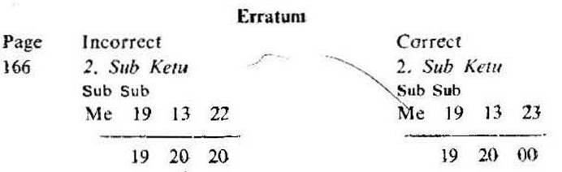

I Basic Principles 1-42
1. Horoscope explained.
2. Sub in Nakshatra system.
3. Grouping of houses.
4. Significators.
5. Significators in their order.
6. Rahu & Ketu and their significance.
7. General strength of a planet.
8. A planet or house 'connected with'.
9. A planet or house harmonious or detrimental.
10. Significator and its sub lord.
11. A planet or house and its two sided effect.
12. Elimination of significators.
13. Cuspal sub lord and its subject matter.
14. Joint period rulers.
15. Transit and Joint period rulers.
16. Cuspal matter and Joint period rulers.
17. Cusp and Aspects.
18. Sub sub in each sub.
II Mystery of Ruling Planets 43-55
1. Ruling planets
2. Ruling planets & Rectification of birth time
3. Ruling planets and significators —
1) Significators and Ruling planets at the time of judgment,
2) Significators and Ruling planets at the time of event,
3) Ruling planets at the time of judgment and event,
4) Joint period rulers of one and the Ruling planets of another,
5) Ruling planets and Affinity,
4. Ruling planets and Fulfilment of a question.
III Planets in Transit 56-59
Transit in Nakshatra or star. Transit in sub Nakshatra or sub. Effects of transitting planets in the example birth horoscope no. 1.
IV Example Nativities 60-99
Good or bad sub period. Longevity. Eye sight. Attempt to commit suicide. Education. Scholarship. Earning. Transfer in Service. From Bar to Judiciary. Partnership business. Purchasing the building. Mystery of 6, 8 & 12. Marriage and Divorce. Foreign Travel. Child birth.
V Example Horary Maps 100-168
Erecting the Horary map. Judging the Horary map. Longevity. Disease. News about the missing wife. Publication of a book. Constructing the building. Selling the house. Lease Licence for Mines. Success in Examination. Scholarship. Employment. Leaving the job. Independent business. Marriage. Overseas for Studies. Foreign Travel. Return of Absconding Son. Lost Documents. Cricket Match. Pregnancy. Table- Stars, subs and sub subs. Ayanamsa (1901-1999).
